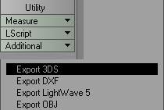

Lightwave/Exporting 3DS
Lightwave ships with a 3ds Exporter.
To find it select the "construct" tab, then open the "additional" Dropdown under the "utility" Heading.

|
It should be the first available export plugin. Selecting it brings up this dialog box:
![[LW_3ds_Export_Options]](images/lw-3ds-export-options.jpeg) The Export Options Dialog Box |
Capture UV Map Check Box: does just that. Captures the Object's UV map(s). One thing of note is that the UV data is only available for export if at least one surface referances that map. (see the [Lightwave/Surface Editor]? section for more information directly regarding that.)
Apply Rotation Check Box: Alters the object's rotation upon export. This is necessarry since each 3d modeling application has its own coordinant system, and up vector. The default value orients the object correctly in 3ds max. Apply Custom Rotation allows you to specify the angular offset.
TIP: If going to maya from Lightwave, use 3ds format, and turn off the rotation settings, just besure to use a z-up world in maya (set in your perferances). The object will be oriented properly.
Scale Object: Scales the object by the typed in factor.
Note: When traveling from program to program you will find that scale seems to jump about alot. The reason is Default units. Lightwave defaults to meters. So a human is 2 units tall. If you transfer to Max that human will be 2 Units tall (as far as I know max is still unspecified units). In maya it will be 2 CM tall. This is a serious issue since your human in the Unreal Universe needs to be about 96 units(unreal units) tall (the reason maya to UT modeling uses CM as a default unit). So to get a properly scaled model(for UT) into another program you need to scale by a factor of about 50 (48 works too).
Final Caveat: Lightwave's UV maps will not (normally) transfer properly useing this plugin. The reason is a limitation of the 3ds format not supporting discontinuous uv coordinants. The solution is to "break" your object before You export it. The default hotkey for that is ctrl+u. It separates each polygon into its own entity (ie they dont share points). This makes the smoothing go away, but the UV coords will transfer. FYI Max does this automatically when exporting to 3ds format also, it simply recombines the verticies when loading its own formats, so most max users don't notice the differance.